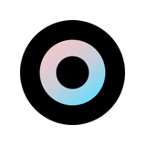
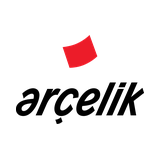
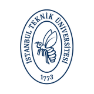
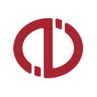

Mustafa Eren KOÇ
I'm Mustafa Eren, a computer engineer. I build mobile apps and the data systems behind them, and I'm interested in research on scientometrics, scholarly data and research information systems.
I studied computer engineering at Istanbul Technical University and business administration at Anadolu University. Alongside my studies, I worked part-time and completed internships at several organizations.
mustafaerenkoc@yahoo.com koc20@itu.edu.tr (Academic)
Software CV Academic CV ORCID GitHub LinkedIn Türkçe
Research
My research interests:
- Scientometrics and the Science of Science
- Data Mining and Natural Language Processing for Scholarly Data
- Research Information Systems and Open Research Data
Two manuscripts from TRBio are under review:
Data and code: TRBio 1.0 data set on Zenodo and the analysis code on GitHub.
Projects
Cosmetic-ingredient analysis app for the Turkish market; live on the App Store and Google Play since September 2026.
- Designed, built and launched the app single-handedly; it explains ingredients in plain Turkish and shows the reasoning behind every product score.
- Developed native iOS (Swift, SwiftUI, StoreKit) and Android (Kotlin, Jetpack Compose, Google Play Billing, ML Kit barcode scanning) apps with in-app subscriptions.
- Built the Python data pipeline and the FastAPI, PostgreSQL and Redis backend behind a 1.5 million+ product catalog, with ingredient normalization and automated quality gates; run it on a self-managed Linux server with Docker, Nginx and CI/CD.
Supported by Microsoft for Startups (Azure Credits) and the OVHcloud Startup Program (€10,000 in Credits); bootstrapped with no outside equity.
Swift · SwiftUI · Kotlin · Jetpack Compose · Python · FastAPI · PostgreSQL · Redis · Docker
Free, transparent directory and field-normalized ranking of academics in Türkiye.
- Built a public directory of 200,000+ academics across 235 institutions and 1,810 subfields, with about 4.9 million deduplicated publications searchable through Meilisearch.
- Designed an open, versioned scoring method with eight components, including SCImago Journal Rank (SJR) quartile–weighted publications, citation percentiles, funded projects, thesis supervision, international collaboration and patents; scores are recomputed daily and compared within each field.
- Linked 111,000+ of these academics to OpenAlex author records through ORCID and shared DOIs. Stack: Python, FastAPI, Jinja2, MongoDB, Meilisearch, Cloudflare Tunnel; 7,600+ automated tests.
Python · FastAPI · MongoDB · Meilisearch · OpenAlex
ITU graduation project: curated knowledge base of Türkiye's bioinformatics research community; built with Naya Şahin, advised by Assoc. Prof. Ali Çakmak.
- Built the identity-resolution, master-data, scoring and portal layers (Python, FastAPI, MongoDB, D3.js) that link national academic records to OpenAlex through strict ORCID-based matching.
- Catalog of 264 researchers at 99 universities in 21 curated research areas tagged with a local LLM (Ollama); co-authorship network and a collaborator recommender reaching ROC-AUC 0.77 on collaborations formed after 2020 (retrospective validation).
- First author of two manuscripts (Nov 2026): under review at Briefings in Bioinformatics and submitted to Database.
Python · FastAPI · MongoDB · D3.js · Ollama · OpenAlex
Work
- Audited IT general controls (access management, change management, backup and business continuity) against the information-systems regulation of BDDK (Türkiye's banking regulator) and KVKK (Türkiye's personal-data protection law), documenting findings in a criteria–evidence–cause–effect format.
- Authored a 26-page benchmark audit of the mobile banking apps of 10 leading Turkish banks across five areas (store ratings and releases, onboarding, login security, customer acquisition, money transfers).
- Designed a risk-rated audit program of 20+ test cases for accessibility-regulation compliance across branches, ATMs, web and mobile channels, contact centers and governance.

- Wrote challenging coding prompts and reference solutions in Python, C/C++ and JavaScript/TypeScript, and rated and ranked model responses for correctness and quality (RLHF) to train large language models.
- Reviewed and approved other contributors' submissions as a quality reviewer.

- Built a full-stack web application (React, Node.js/Express, PostgreSQL) to replace Excel-based tracking of factory test data, developing both the back end and the front end.
- Installed and configured Cisco routers and switches (IP addressing, subnetting, security settings), including rack mounting and cabling; tested and troubleshot the network with cable testers and Wireshark.
Education

Graduation project: TRBio, Bioinformatics Community Portal; advisor Assoc. Prof. Ali Çakmak
Kale Foundation (KSV) scholarship holder throughout the degree

Graduated with Honors
Course Projects:
- LLM Code and Test Generation (BLG 475E Software Quality and Testing). Built the evaluation pipeline for LLM-generated Java code and unit tests on 30 HumanEval-X tasks: local llama.cpp inference, JUnit adapters, JaCoCo branch coverage and PITest mutation testing in GitHub Actions CI (team of two).
- Local Wikipedia RAG Assistant (BLG 483E AI Aided Computer Engineering). Fully local retrieval-augmented assistant over 40 Wikipedia articles: sentence-aware chunking, local embeddings, SQLite and ChromaDB, Llama 3.2 via Ollama and a Streamlit chat interface.
- Concurrent Web Crawler and Search Engine (BLG 483E AI Aided Computer Engineering). Standard-library Python crawler with live search while indexing: depth-bounded crawling, deduplication, back pressure, a resumable SQLite (WAL) frontier and a localhost dashboard.
- QueryCurious — Trade Analytics (BLG 317E Database Systems). Flask and MySQL analytics app; built the streaming ETL that loads 126 MB of trade data into a nine-table schema, plus the admin panel and route explorer (team of five).
Skills
Programming: Python, Swift, Kotlin, TypeScript/JavaScript, SQL · also Java, C/C++
Backend & Data: FastAPI, Flask, Node.js/Express, PostgreSQL, MongoDB, MySQL, Redis, Meilisearch, ETL pipelines, pytest
AI & LLMs: LLM integration and evaluation, prompt engineering, RAG (ChromaDB), local models (Ollama, llama.cpp), RLHF
Mobile & Web: SwiftUI, UIKit, StoreKit, Jetpack Compose, Google Play Billing, ML Kit, Next.js, React, D3.js, Playwright
Infrastructure: Linux, Docker, Nginx, CI/CD, Cloudflare, systemd